Классы и обьекты
Большую часть написанного кода на РНР можно встроить непосредственно в разметку веб- страниц, потому что для этого в РНР предусмотрена соответствующая поддержка.
РНР 7, выпущенной в декабре 2015 года. В частности, в этой версии поддерживаются объявления типов параметров и возвращаемых типов
В декабре 2020 года, почти через пять лет после выпуска РНР 7, был подготовлен к выпуску РНР 8.
Объекты не всегда были основной частью РНР- проекта. Более того, идея реализовать объекты пришла в голову разработчикам РНР в виде запоздалой мысли.
Своим происхождением язык РНР, каким мы его знаем сегодня, обязан двум инструментальным средствам, которые разработал Расмус Лердорф на языке Perl. Сокращение “РНР” обозначало “ Personal Home Page Tools” ( Средства для персональной начальной страницы ), a “ FI” “ Form Interpreter” ( Интерпретатор форм ).
Для расширения возможностей языка РНР был заново написан процессор Zend, название которого происходит от имен Zeev и Andi . Процессор Zend стал одним из основных компонентов, положенных в основу работы РНР.

Несмотря на то что такая конструкция действовала исправно, программисты часто забывали добавить символ амперсанда, и вероятность появления ошибок в объектно -ориентированном коде была очень высока.
В версии РНР 5.3 были введены пространства имен. Это по- зволило создавать именованные области видимости для классов и функций, в результате чего снизилась вероятность дублирования имен при включении компонентов в библиотеки и расширении системы
Класс — это шаблон кода, применяемый для создания объектов. Класс объявляется с помощью ключевого слова class и произвольного имени класса.

В версиях РНР 4 и РНР 5 (до версии 5.1 включительно) объекты можно выводить на печать непосредственно. В итоге объект будет приведен к символьной строке, содержащей его идентификатор. Но, начиная с версии РНР 5.2, такая возможность больше не поддерживается , и любая попытка интерпретировать объект как символьную строку приведет к ошибке, если только в классе этого объекта не будет определен метод toString ()
В классах можно определять свойства и методы, свойства можно передоваать в конструкторе класса, мнтод отличается от функции тем что он определяется в теле класса
Как и свойства, методы можно определять как public, protected или private. Объявляя метод как public, мы тем самым обеспечиваем возможность его вызова за пределами текущего объ- екта. Если в определении метода опустить ключевое слово, определяющее область его видимости, то метод будет объявлен как public неявно.

Метод конструктора вызывается при создании объекта. Он служит для настройки экземпляра объекта, установки определенных значений его свойств и выполнения всей подготовительной работы к применению объекта.
До версии РНР 5 имя метода-конструктора совпадало с име- нем класса, к которому оно относилось . Так, в качестве конструктора класса ShopProduct можно было использовать метод ShopProduct ( ) . Такой синтаксис считается устаревшим, начиная с версии РНР 7, и вообще не работает в версии РНР 8. Метод-конструктор следует именовать __construct().


Если аргумент не обьязательный то можно использовать эту конструкцию public function getValues(array $default = null) Если значение типа может быть null то можно использовать такую конструкцию public function add(?string $value)
Смешанный тип можно определить так mixed, или вот так int|fload

Наследование — это механизм, посредством которого один или несколь- ко классов можно получить из некоторого базового класса. Класс, унаследованный от другого класса, называется его подклассом. Эта связь обычно описывается с помощью терминов родительский и дочерний, дочерний класс расширяет родительский. Наследование происходит ключевым словом extends. Определяя конструктор в дочернем классе, вы берете на себя ответствен- ность за передачу требующихся аргументов родительскому классу. Синтаксическая конструкция parent :: construct() означает следующее: “Вызвать метод construct () из родительского класса”

Ключевое слово parent можно использовать в любом методе, перекры- вающем свой эквивалент из родительского класса. Когда метод перекрывается, вероятнее всего, требуется расширить, а не отменить функциональные возможности родительского класса. Достичь этого можно,
Элементы класса можно объявить как public ( открытые), private ( закрытые ) или protected ( защищенные )
• К открытым свойствам и методам можно получать доступ из любого контекста.
• К закрытому свойству и методу можно получить доступ только из
того класса, в котором они объявлены. Даже подклассы данного клас-
са не имеют доступа к таким свойствам и методам.
• К защищенным свойствам и методам можно получить доступ либо
из содержащего их класса, либо из его подкласса. Никакому внешнему коду такой доступ не предоставляется.
Свойства класса тоже можно типизировать

Доступ к методам и свойствам можно получать в контексте класса, а не объекта. Такие методы и свойства являются статическими и должны быть объявлены с помощью ключевого слова static
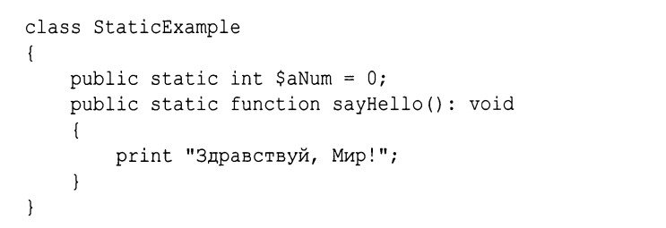
Статические методы это функции, применяемые в контексте класса. Они не могут сами получать доступ к обычным свойствам класса, потому что такие свойства относятся к объектам. Но из статических методов можно обращаться к статическим свойствам
PDO означает РНР Data Object ( Объект данных РНР ). А класс PDO обеспечивает универсальный интерфейс для различных приложений баз данных.
Термин фабрика относится к коду, предназначенному для создания экземпляров объектов Постоянное свойство объявляется с помощью ключевого слова const. В отличие от обычных свойств перед именем константного свойства не ставится знак доллара. Для них зачастую принято выбирать имена, состоящие только из прописных букв, как в следующем примере: const OUT OF STOCK = 1;
Абстрактный класс отличается тем, что невозможно создать его экземпляр. Вместо этого в нем определяется ( и, возможно, частично реализуется ) интерфейс для любого класса, который может его расширить. Абстрактный класс определяется с помощью ключевого слова abstract.
Как известно, в абстрактном классе допускается реализация некоторых методов , не объявленных абстрактными. В отличие от них, интерфейсы это чистые шаблоны. С помощью интерфейса можно только определить функциональность, но не реализовать ее. Для объявления интерфейса используется ключевое слово interface
Реализующий класс принимает тип класса и интерфейса, который он расширяет. Реализация интерфейса в классе class Shipping implements Chargeable
В отличие от языка C++, в РНР, как и в языке Java, не поддерживается множественное наследование. Но эту проблему можно частично решить с помощью интерфейсов, как было показано в предыдущем разделе. Иными словами, для каждого класса в РНР может существовать только один родительский класс. Тем не менее в каждом классе можно реализовать произвольное количество интерфейсов. При этом данный класс будет принимать типы всех тех интерфейсов, которые в нем реализованы. Но что делать, если требуется реализовать ряд общих методов для всей иерархии наследования классов ? Для этой цели в версии РНР 5.4 было введено понятие трейтов
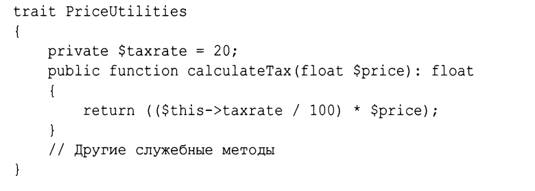
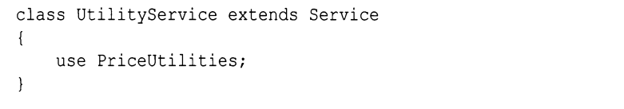
В PHP можно разрешить конфликты имён в трейтах с помощью оператора insteadof и as.
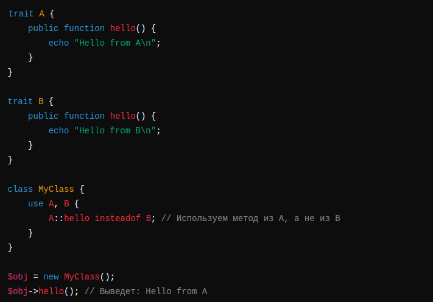
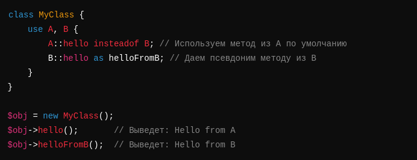
Абстрактные методы можно объявлять в трейтах так же, как и в обычных классах. Чтобы воспользоваться таким трейтом в классе, в нем следует реализовать все объявленные в трейте абстрактные методы.
Безусловно, ничто не может помешать вам объявить методы трейта открытыми ( public ), защищенными ( private ) или закрытыми ( protected ). Но вы можете изменить эти модификаторы доступа к методам и непосредственно в том классе, в котором используется трейт
При обработки ошибок можно использовать эти методы
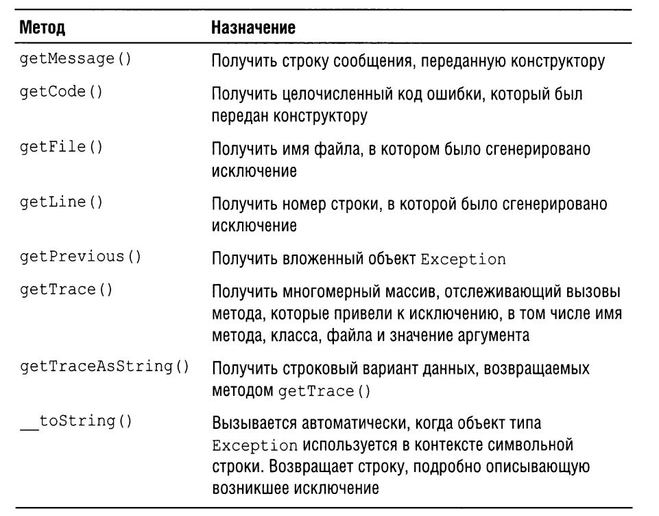
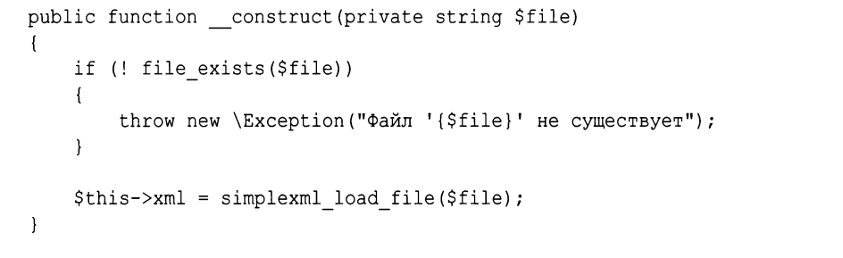
обработку ошибок можно писать в конструкции try catch finally Блок finally выполняется, если в блоке catch повторно генерируется исключение или выполняется оператор return, возвращающий значение вызывающему коду. Если же в блоке try или catch для завершения сценария вызывается функция die() или exit(), то блок finally не выполняется.
В PHP можно создавать собственные исключения, расширяя встроенный класс Exception, и затем использовать их в try-catch блоках.
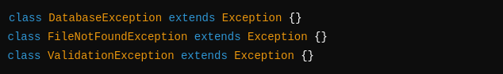
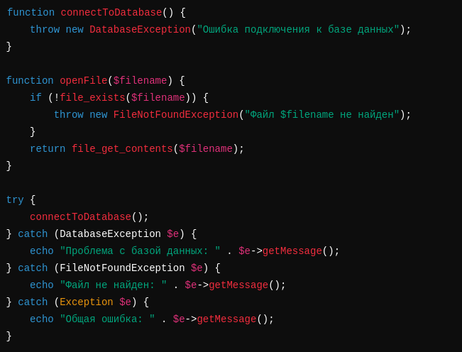
Если вы создали необходимый уровень функцио- нальности для класса и считаете, что его переопределение может только повредить идеальной работе программы, воспользуйтесь ключевым словом final Ключевое слово final позволяет положить конец наследованию. Для завершенного класса нельзя создать подкласс, методы тоже бывают завершенными и завершенный метод нельзя перекрыть. final class Checkout
Методы перехватчики или как их еще называют магические методы вызываются неявно и бывают этих типов
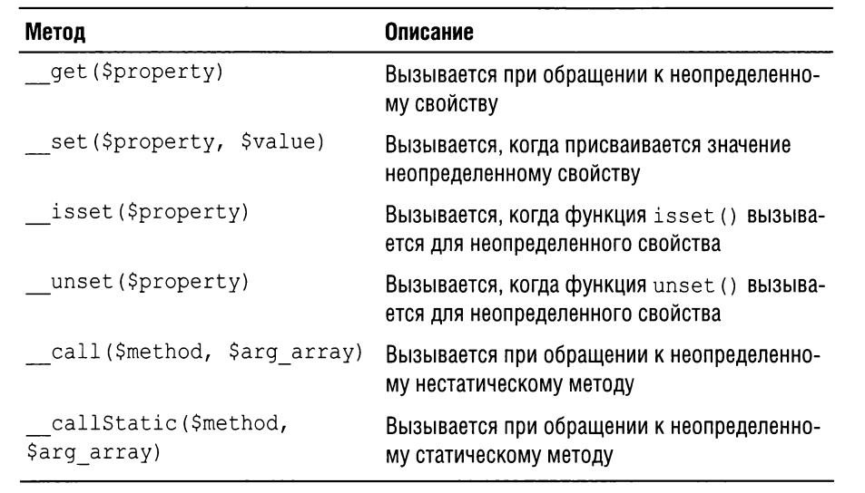
В версии РНР 5 в язык был добавлен метод -деструктор __destruct() , который вызыва- ется непосредственно перед тем, как объект отправляется на “ свалку”, т.е. удаляется из памяти. Этим методом можно пользоваться для выполнения завершающей очистки оперативной памяти от объектов, если в этом есть необходимость.
В PHP метод __clone() позволяет определить поведение при клонировании объекта с помощью clone
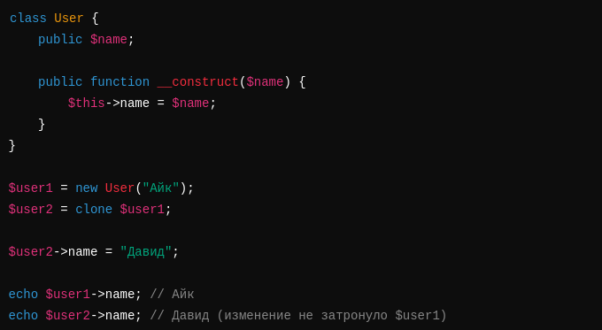
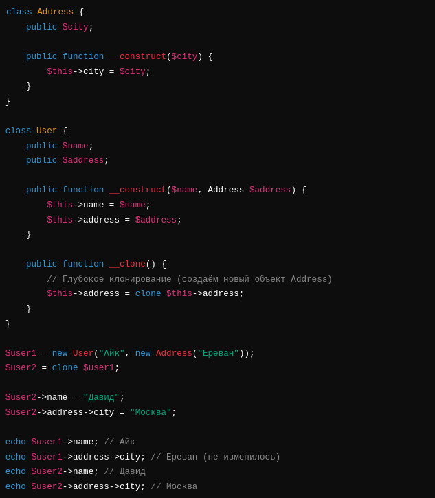
Еще одним языковым средством, внедренным в версии РНР 5 явно под влиянием Java, является метод toString ( ) . До выхода версии РНР 5.2 при выводе объекта он разрешался в строку:
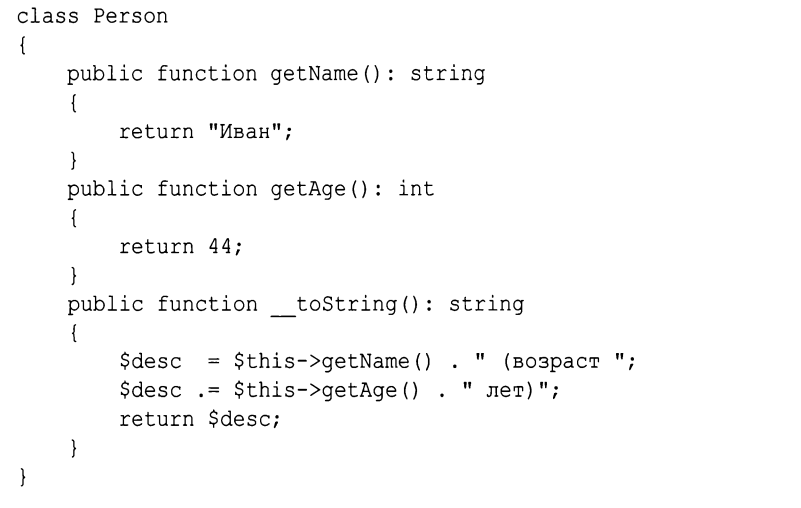
Функция обратного вызова (callback) — это блок выполнимого
кода, который можно сохранить в переменной или передать методам и функциям
для последующего вызова
Callback – функция, передаваемая в другую функцию.
Анонимная функция – функция без имени, которую можно передавать как колбэк.
Callback – это функция, которую передают в качестве аргумента другой функции и вызывают внутри неё.
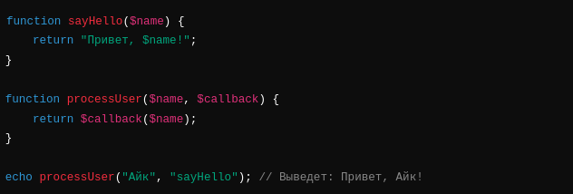
Анонимная функция (lambda, замыкание) – это функция без имени. Она может быть присвоена переменной или передана как аргумент.
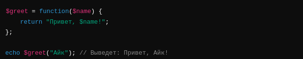
Callback + Анонимная функция
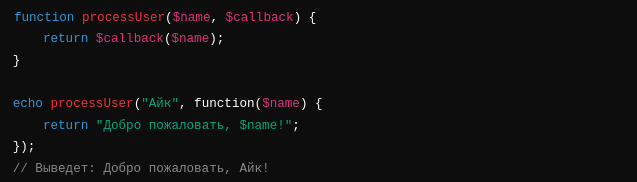
Анонимный класс – это класс без имени, который создаётся прямо в момент его использования. Он обычно используется, когда нужно создать одноразовый объект без необходимости объявлять полноценный класс.

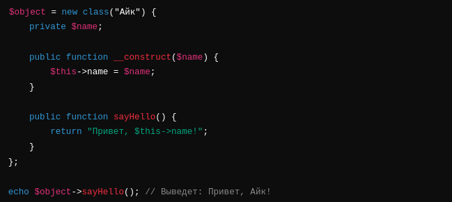
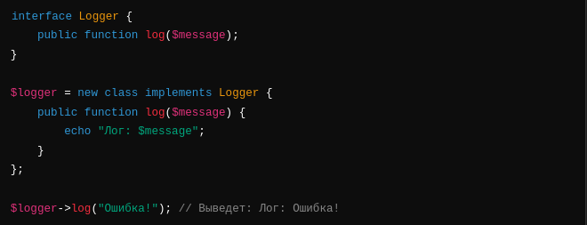
Пакет ванных некоторым образом. Пакеты можно использовать для разделения частей системы на логические компоненты, в языке РНР такого понятия, как пакет, никогда не существовало, но начиная с версии РНР 5.3 в нем поддерживаются пространства имен
Единственное различие инструкций require_once() и include_once() заключается в обработке ошибок. Файл, к которому происходит обращение с помощью инструкции require_once() , приведет к остановке всего процесса выполнения программы, если в нем возникнет ошибка. Аналогичная ошибка, обнаруженная в результате применения инструкции include _once ( ) , приведет лишь к выдаче предупреждения и прекращению выполнения включаемого файла, после чего выполнение вызвавшего его кода будет продолжено. Поэтому инструкции require ( ) и require once ( ) лучше выбирать для включения библиотечных файлов, а инструкции include ( ) и include _ once ( ) лучше подходят для выполнения таких действий, как шаблонная обработка. Синтаксические конструкции require ( ) и require _once ( ) на самом деле являются инструкциями, а не функциями . Это означает, что при их использовании можно опускать скобки.
Несмотря на все преимущества применения инструкции require _once ( ) вместе с путями включения файлов многие разработчики избегают таких инструкций, используя вместо них автозагрузку. Для этого классы необходимо организовать таким образом, чтобы каждый из них размещался в отдельном исходном файле. Имя каждого такого файла должно быть непосредственно связано с именем класса, который в нем содержится. Например, класс ShopProduct можно определить в исходном файле ShopProduct . php и поместить в каталог, соответствующий пространству имен данного класса. Для ее включения достаточно вызвать функцию spl _autoload_register ( ) без параметров. После этого активизируется средство автозагрузки классов, которое автоматически вызывает встроенную функцию spl autoload ( ) при попытке получить экземпляр неизвестного класса. В качестве параметра функции spl _ autoload ( ) передается имя неизвестного класса, которое затем преобразуется в имя файла.
Функции class _exists ( ) передается строка, содержащая имя класса. Она возвращает логическое значение true, если класс существует, а иначе — логическое значение false, класс, а следовательно, и тип объекта можно проверить с помощью функции get class ( )
Оператор instanceof выполняется над двумя операндами: объектом, который требуется проверить ( этот операнд указывается слева от ключевого слова instanceof), и именем класса или интерфейса, указываемого справа. В итоге операция instanceof возвращает значение true, если объект является экземпляром класса указанного типа
Чтобы получить список всех методов класса, можно воспользоваться функцией get_class_methods()
Подобно запрашиванию списка методов, можно запросить список свойств из класса. С этой целью функции get_class_vars() передается имя класса, а она возвращает ассоциативный массив
Используя функции для обращения с классами , можно также выявлять отношения наследования. Так, с помощью функции get_parent_class() можно выяснить имя родительского класса для указанного класса
В PHP функция call_user_func позволяет вызвать другую функцию или метод динамически. Она принимает имя вызываемой функции (или массив с объектом/классом и методом) и аргументы для этой функции
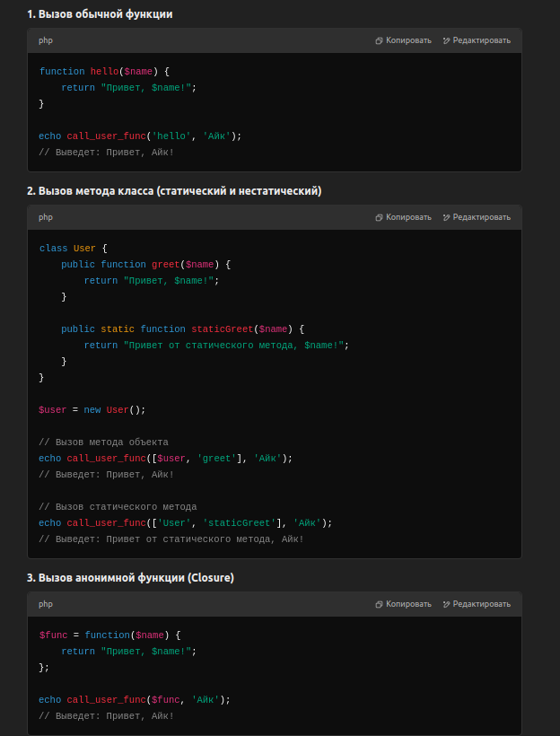
Reflection API – это механизм в PHP, который позволяет анализировать
(и даже изменять) код программ на уровне классов, методов, свойств и параметров во время выполнения.
Простыми словами, Reflection API позволяет узнавать информацию о коде во время работы программы.
Например, можно определить, какие методы есть у класса, какие у них параметры,
есть ли у свойств модификаторы private или public и т. д.
🔹 Когда использовать Reflection API?
Автоматическая генерация документации – можно получить список методов и их параметры.
Фреймворки – многие фреймворки (например, Laravel) используют Reflection API для внедрения зависимостей.
Работа с аннотациями – некоторые библиотеки используют Reflection API для анализа комментариев.
Юнит-тестирование – можно тестировать приватные методы без их изменения.
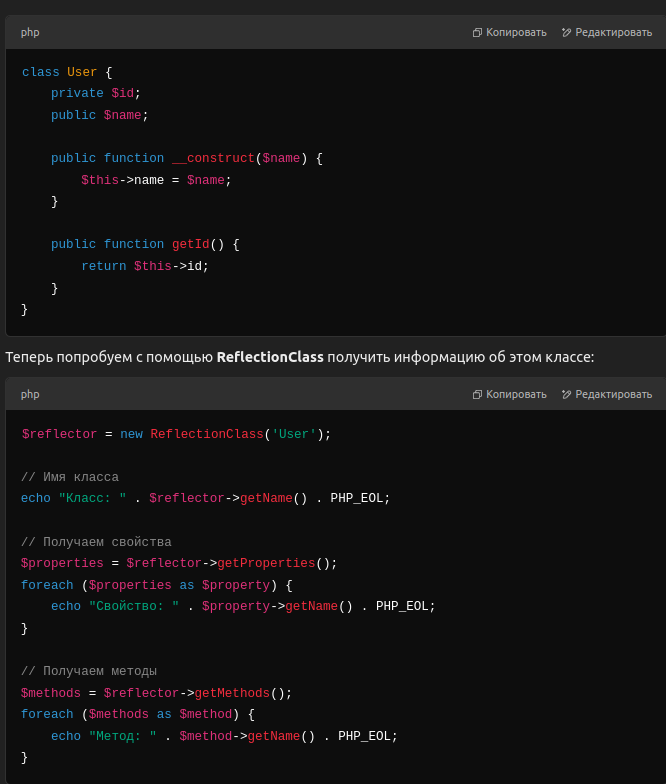
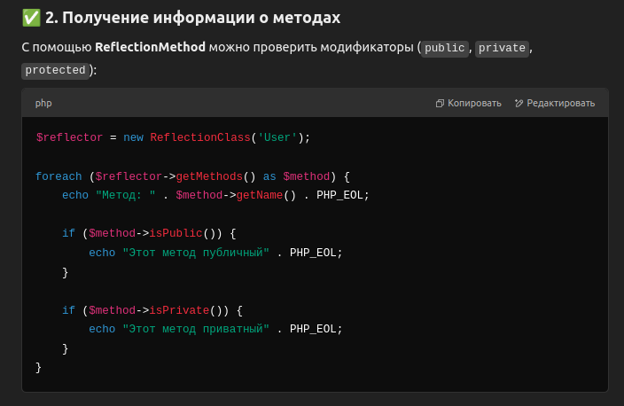
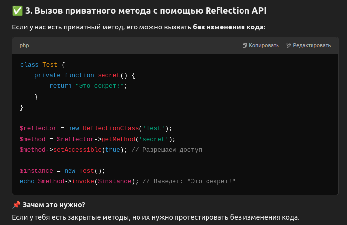
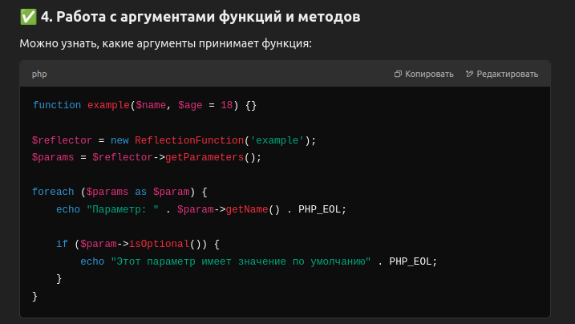
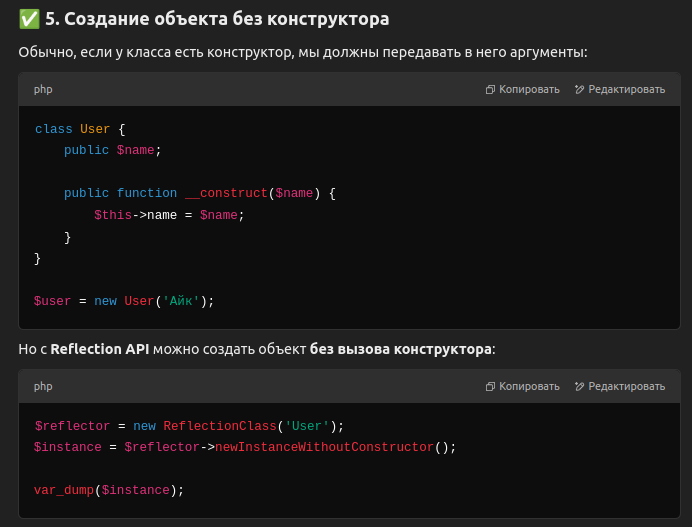